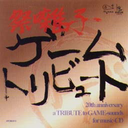
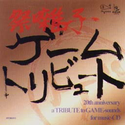

祭囃子ゲームトリビュート
20th anniversary
a TRIBUTE to
GAME-sounds for music-CD


祭囃子ゲームトリビュート
20th anniversary
a TRIBUTE to
GAME-sounds for music-CD

|
発売元：株式会社エアーズ |
|
スペースインベーダー登場から20周年を祝ったゲーム音楽のトリビュート盤。 |
|
01. 小倉久寛：プロローグ 02. Char：スペースインベーダー 03. 野村義男：ゼビウス 04. 土方隆行：信長の野望 05. 中シゲヲ：A列車で行こう 06. 島袋優：ファイナルファンタジー 07. 手島いさむ：ファイヤープロレスリング 08. 北島健二：天外魔境 09. 斉藤和義：ぷよぷよ 10. ゴンザレス三上&チチ松村：ダービースタリオン 11. DAITA：ストリートファイター2 12. ルーク：サウンドノベル弟切草 13. 白井良明：MYST 14. パッパラー河合：ポポロクロイス物語 15. 西慎嗣：NiGHTS〜into dreams |
|
・次の作品を見てみたいっす!! ・関連CD＜国内編＞のページへ ・Music CDのページへ ・Sound Web Siteのトップページへ |